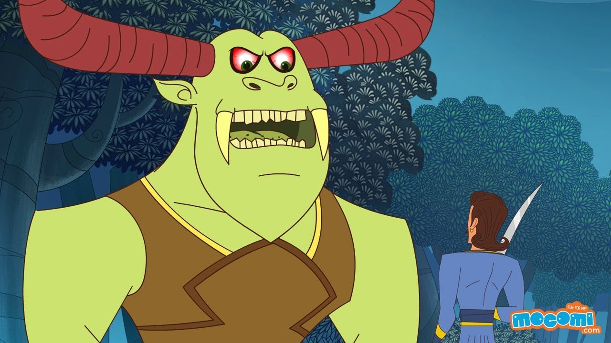

Wisdom is Greater
Everything is possible if acted wisely
As king Vikramaaditya took Vaitaal on his shoulder, Vaitaal started telling him a story -
"Listen O King, Once upon a time, there ruled a king in Vaaraanasee city. He had a son
named Vajramukut. King had a minister who also had a son named Ratnraaj. Both were very
good friends. They both were seen together. They used to go together for hunting too.
Once they went to a forest for hunting, but got separated while they were following their
deer. After some time, Vajramukut sensed that he had come very far, and now he should go
back. So he turned back without hunting the deer.
When he was coming back, he saw a beautiful palace. It looked like a king's palace. There
was a beautiful garden also beside the palace. Many kinds of flowers were blooming there.
There was a small temple also in the garden. Prince was very tired, so he came in the
garden with the idea that he would take some rest there. He was about to lie down there,
that the gardener of that garden came and said to him - "O traveler, You go from here
because the princess is just about to come here to worship. If she saw you here, she would
scold me." Prince said - "OK, I will go from here." Gardener went away assured that the
prince would go away. Prince also started preparing his horse to go from there.
In the meantime, the princess came there with her friends to worship in that temple.
Vajramukut got stunned to see her and continued looking at her. She was very beautiful. He
has never seen such a beautiful girl before. She went to the temple to worship and when
she came back she saw the prince standing there. She also got attracted to him.
She picked up the lotus flower from her head which she brought from the temple, touched
it with her ears, bit it by her teeth, put it under her foot and then touched it with her
heart. Vajramukut was still looking at her. The princess went away, so he also came back.
He was very sad as he was unable to forget the princess. On the way he met his friend
Ratnraaj.
Ratnraaj found him sad, so he asked him - "O Prince, What is the reason, why do you look
so sad?" First the Prince didn't tell him any thing, but when Ratnraaj insisted, he told him
the whole story. Ratnraaj smiled and asked him - "What do you want now, tell me." The
prince said - "I want to marry her." Ratnraaj asked - "Did she also see you?" "Yes, She
also saw me." "Then what did she do after seeing you? If you tell me everything, maybe I
can help you." The prince told him everything as how she picked up the lotus flower from
her head, touched it with her ears, bit it by her teeth, put it under her foot and then
touched it with her heart. Hearing this Ratnraaj got very happy. He said - "You are
through now." Vajramukut asked him - "How do you know?"
O Vikram, listen further what happened. Ratnraaj told him that "she touched the flower
with her ears", it meant that she lived in Karnaatak Pradesh; and "bit it by her teeth", it
meant that she was the daughter of king Dantvaad; "put it under her feet", it meant that
her name was Padmaavatee; and then she "touched the flower with her heart", it meant
that she loved you. Vajramukut got very happy to hear this and said to Ratnraaj - "So now
we should go there." "Sure".
Both started towards king Dantvaad's city. In Dantvaad's city, Ratnraaj started looking for
someone who often used to go to the princess. After some time he found an old woman who
used to go to her daily. So they came to her house and knocked the door. When she came
to open the door, Ratnraaj said to her - "Mother, We are travelers. We wish to see king
Dantvaad's city, can we stay with you for a couple of days?" The woman said - "If you wish
so. I live here alone." So Hey Vikram, They both stayed with that woman. That woman had
brought up the princess by breastfeeding her, that is why she used to go to her once a day,
just to see her.
Next day when that old woman was about to go to see the princess, Ratnraaj said to her -
"Will you take our message to the princess?" "What is that?" Ratnraaj said - "Tell her that
whoever she saw in the temple, he has come." The woman said - "If she got angry, she will
kill me." Ratnraaj assured her that this would not happen. The woman agreed.
When the woman met the princess, she conveyed the message of Ratnraaj. The princess
first smeared some sandal paste on her cheek and then slapped her five times and pushed
her out of the palace. The woman got frightened, because the princess has never behaved
with her like this before. She immediately came back home and said to the boys - "You
have put me into trouble. I am sure the king will severely punish me for this. The princess
was very angry with me. She slapped me five times and pushed me out of the palace."
Hearing this the prince got worried, but Ratnraaj laughed. The prince said - "This poor
woman was slapped and you are laughing? What is there to laugh?" Ratnraaj stopped laughing
and said - "The princess has said that "let five days of bright fortnight pass, then I will
tell you, what to do." Both, Vajramukut and the woman, got a sigh of relief. When the
woman went there next day, the princess behaved normally with her, so the woman got
happy.
After five days, the princess slapped her with inked hand and sent her out through west
door. The woman told this to those boys. Vajramukut asked Ratnraaj - "Now tell me what
does this mean?" Ratnraaj said - "Now the princess has sent the message that you go there
in the night through west door, and she will meet you there." Prince got very happy to hear
this.
At midnight, when the prince went to the west door of the palace, the princess was waiting
for him. She took him inside, he stayed there for overnight. He came back from there next
day. But when he came back, he was very sad. Ratnraaj said - "Friend, What is the
matter? You are coming after meeting your beloved, and still you are sad? You should be
happy." Vajramukut said - "The princess told me that she loved me very much but her
father has fixed her marriage somewhere else. What to do now?" Ratnraaj said - "Let me
think, I try to find some way."
Ratnraaj asked - "When she has asked you to come back?" "She has called me tomorrow."
"OK, then I will tell you tomorrow." Next day, when the prince was about to go, he gave
him a Trishool (trident) and asked him to make a mark on her thigh with that Trishool and
come back with all of her jewelry. First Vajramukut hesitated but then agreed to do the
same. He did so. He made a mark with Trishool on her thigh, took her all jewelry and came
back. Now Ratnraaj assumed his guise as a Saadhu and Vajramukut as his disciple and went
to a temple.
Ratnraaj sat in the temple and asked the prince to sell that jewelry in the market. The
Prince said - "But these are princess' jewelry, as I will sell them, I will get caught."
Ratnraaj said- "We want the same thing, when they will catch you, you will tell them, "My
Guru has given them to me to sell." When they will come to me, I will deal with them." The
prince went to sell that jewelry to the same jeweler who used to make jewelry for the king.
As the jeweler saw the rincess' jewelry, he handed him over to the king's men.
The king's men asked him - "Where did you get these ornaments?" The prince said - "My
Guru gave me these to sell in the market." "Who is your Guru?" "Come with me, I show him
to you." So all came to Ratnraaj. They arrested Ratnraaj and presented them in the royal
court. Ratnraaj said to the king - "Mahaaraaj, A witch came to me last night, I made a
mark on her thigh, and took all ornaments off her body."
The king got very surprised to hear this. He found out that the princess had that Trishool
mark on her thigh. He expelled her out of his kingdom. The prince went to see the princess.
First the princess got very angry, but after knowing the purpose of this, she got very
happy. The prince took her away, married her, and they lived happily ever after.
After telling this story, Vaitaal asked Vikram, "Who is at fault in this?"
Vikram said - "Listen O Vaitaal, The minister's son kept his friendship, the soldiers obeyed
their king, but the king himself is at fault, because he expelled the princess without
consideration."
"You are right." Saying Vaitaal ran away from the king's shoulder laughing loudly and hung
upside down from the same tree. The king Vikramaaditya got worried that this Vaitaal had
deceived me. He took out his sword and came back to the same place. He asked him - "Why
did you come here?" "Why did you speak?" The King said - "You asked me to do justice, and
I did that." Saying this the King again took him from the tree, put him on his shoulder and
started walking. Vaitaal said - "King, You are very cruel. You twisted my neck in such a way
that it is hurting me terribly." "Then why did you run away?" "This is my nature, what can I
do?" The king was holding him tightly and was walking fast.
After a while, Vaitaal said - "I have heard, that you have a throne in which there are 32
female figures?" The king said - "Yes, I have it, but why do you ask?" Vaitaal said - "In
fact my great grandfather sculptured them, that is why I know them very well. In fact,
that throne itself was made by my great grandfather."
Vikramaaditya kept quiet. Now he had firmly believed that he was the same Taantrik, who
was referred to by that Dev, that was why he thought to be careful, and the king became
more careful. Vaitaal said - "O King, Just to pass time, listen to this story now."
"You be quiet."
"Vaitaal cannot keep quiet."
"I will not listen to your story."
"Then I will run away." and he ran away again.
Vikram had to run after him, he caught him again and started walking. Vaitaal again ran
away, and Vikram again had to bring him back. At last Vikram said - "OK, Tell your story,
I will listen to it."